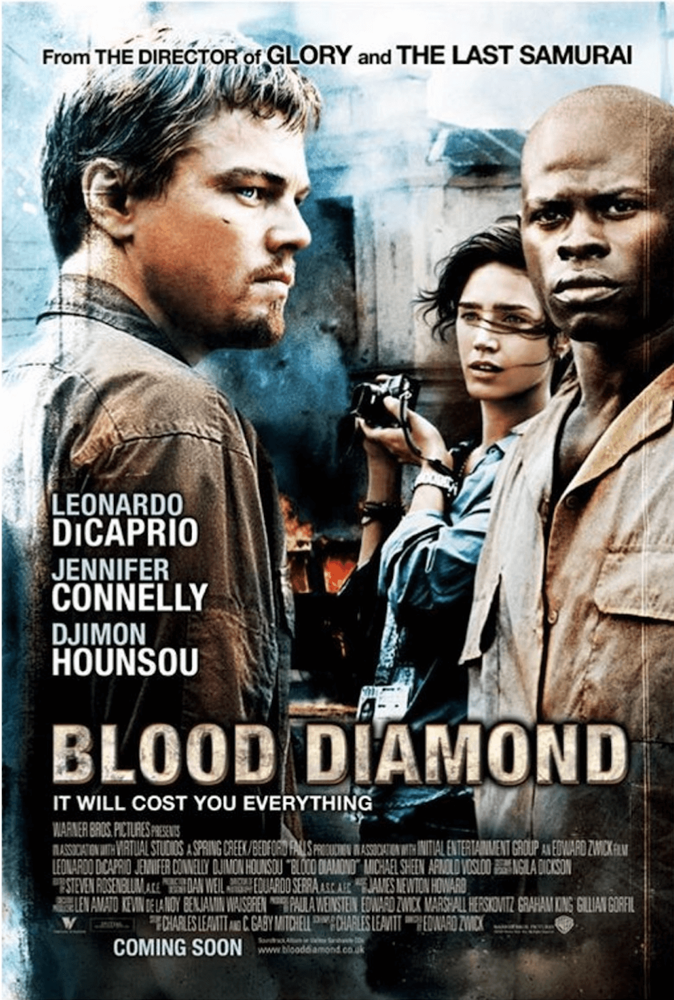

학인위 사랑방 9월호
<학인위 사랑방>은 인권 관련 컨텐츠 추천글입니다.
한 달에 한 번, 우리 주변과 나의 삶을 생각해 볼 수 있는
다양한 컨텐츠를 감상해 보시는 건 어떨까요?
<학인위 사랑방> 9월호에 올라온 컨텐츠를 감상한 후
#학인위사랑방 해시태그와 함께 인스타그램에 감상평을 올리면,
추첨을 통해 매달 세 분께 문화상품권(만원)을 드립니다.
- 첫 번째 추천작 -
이웃집에 신이 산다
Le Tout Nouveau Testament
장르 영화, 코미디/판타지
감독 벤자코 반도르말
개봉 2015
“ 죽으면 아무것도 없어요. 여기가 천국이에요. ”
사람들이 자신이 죽는 날을 알게 된다면? 폭력적인 아빠 신에게서 탈출해 6명의 사도와 함께 새로운 신약성서를 쓰는 에아의 이야기. 재치 있는 대사와 뛰어난 영상미가 돋보이며 생각할 거리를 던져줍니다.
다양한 삶을 응원하고 지금 순간의 소중함을 알려주는 영화입니다.
- 두 번째 추천작 -
미아리 서신

장르 책, 칼럼/종교
저자 이미선
출간 2012
“ 그녀들이 밝은 세상을 향하여 한 발 한 발 어렵게 떼어놓을 때,
그 손을 잡아주고 싶습니다. ”
성노동 집결지인 “미아리 텍사스”에서 “건강한 약국”을 운영중인 이미선 약사의 칼럼입니다. 이미선 약사는 텍사스촌의 사람들과 함께 아파하고 그들을 위해서 간절히 기도합니다.
“약사 이모” 이미선 약사가 아프고도 따뜻한 그 곳 사람들의 이야기를 이 책을 통해 들려드립니다.
- 세 번째 추천작 -
블러드 다이아몬드
Blood Diamond

장르 영화, 모험/전쟁
감독 에드워드 즈윅
개봉 2017
“ 당신도 공범이야. 미국인은 다 공범이야. ”
분쟁 다이아몬드(Blood Diamond)를 아시나요? 다이아몬드 생산지를 쟁탈하기 위해 벌어지는 내전, 고통받는 난민, 소년병, 강제노역자, 그리고 이들의 고통을 무시하고 이권다툼을 하는 기업...
아름답게 보이는 것의 이면 역시도 항상 아름다운 것은 아님을 보여주는 영화입니다.
- 네 번째 추천작 -
러빙 빈센트
Loving Vincent

장르 애니메이션, 미스터리
감독 도로타 코비엘라, 휴 웰치맨
개봉 2017
“ 아무리 강한 사람이라도 삶을 살다도면 무너질 수 있다. ”
젊은 나이에 세상을 떠난 화가 빈센트 반 고흐. 살아생전 그는 매일을 어떠한 마음으로 견뎌내고 있었을까요. 107명의 아티스트가 모여 그의 죽음에 대한 새로운 이야기를 전하고자 합니다.
집에서 다양한 예술 작품을 경험해 보고 싶으신 분들, 삶의 의미에 대해 고민해보고 싶으신 분들께 추천드립니다.
추천해드린 컨텐츠 중 여러분이 보고 싶은 컨텐츠는 무엇인가요?
<학인위 사랑방>에 올라온 컨텐츠를 감상한 후
#학인위사랑방 해시태그와 함께 인스타그램에 감상평을 올리면,
추첨을 통해 매달 세 분께 상품을 드립니다.
다른 사람에게 추천하고 싶은 인권 관련 컨텐츠가 있다면,
학생인권위원회 @seoultech.humanrights 댓글과 DM으로 알려주세요.
다음 달 <학인위 사랑방>에 반영하겠습니다!